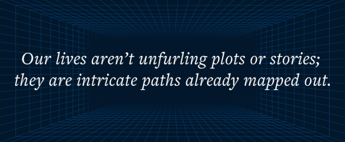
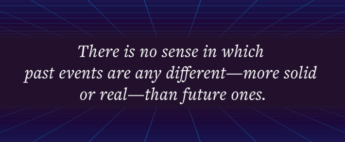

I walk down the patterned garden paths
In my stiff, brocaded gown.
With my powdered hair and jeweled fan,
I too am a rare
Pattern.
— Amy Lowell
In the 2016 movie Arrival, a group of cephalopod-like creatures, dubbed “heptapods,” unexpectedly appear on Earth in a series of gravity-defying spacecraft. The story follows a linguist, Louise Banks, who experiences flashback-like visions as she interacts with the aliens and learns to decipher their complex, circular symbols. Rather than being read word by word, like our sentences, it turns out that these intricate swirls of ink are designed to be comprehended all at once; with each thought communicated in a timeless flash. Banks soon realises that this new language has profound implications: It gives the aliens the ability to see across time. In other words, they live their lives all at once too.
The heptapods’ god-like abilities imply a reality very different from the one that most of us feel we’re living in. In this world, the future already exists. Time is laid out in both directions, forming a solid terrain that can be mapped and navigated, with Now simply representing the spot on that landscape where we happen to be standing. With a shift in perspective—an alien language, a different way of thinking—it’s possible to peer forward into the future just as easily as back into the past.
Over the past century, physicists working from Einstein’s blueprint of relativity have developed a variety of ideas for what the universe might look like without a global, advancing Now. The most popular model, and perhaps the closest to Einstein’s vision, is much like the world of the heptapods. Called the “block universe,” it is essentially a static brick that encompasses all of space and all of time. Rather than a three-dimensional place that evolves, the block universe is a static, four-dimensional entity (the fourth dimension being time). You can imagine it as a vast block of glass or ice, stretching out in every direction in space as well as back and forth in time, containing all the connections and events that make up the universe.

This glacial brick encompasses everything that happens, from the universe’s creation in the Big Bang until its final moment, with each event positioned according to its unique location in space and time. Each particle emission, star explosion or black-hole collision has its eternal coordinates. Your birth, death, and every breath of your life in between, all have their place. From our human perspective, we experience a fundamental difference between things that have happened, are happening, and will happen. But in the block universe, there’s no such distinction. We can say that one event is in the past or future relative to another, by looking at where they each sit within the block. This relation will always be true. But there is no sense in which past events are any different—more solid or real, say—than future ones. How could they be, when any event that’s in the future from one vantage point might be in the past from another?
The block universe implies that change, or happening, is an illusion, explains the cosmologist Max Tegmark. “There’s nothing that’s changing,” he says; “it’s just all there—past, present, future.” If life is like watching a movie, he suggests, then the block universe is the physical DVD. Although all kinds of drama might unfold in the movie as we play it, all these events are already written into its structure: “There’s nothing about the DVD itself that’s changing in any way.” The heptapods simply have a different way of reading it.
This doesn’t mean that “time” itself doesn’t exist. General relativity does include time as a variable. But it’s simply a mathematical quantity, essentially a label that you can attach to different states of the world, like the time stamp on the DVD. All the things that matter to us humans about time—irreversible transition from past to future; the specialness of Now—are constructed by our minds, true only from our particular perspective. “Contrary to everyday experience, time may not flow at all,” agrees physicist and popular-science author Brian Greene. “Our past may not be gone. Our future may already exist.” The entire history of the universe (and us) just is.
Read more: “Does Anybody Really Know What Time Is?”
Our lives aren’t unfurling plots or stories; they are intricate paths already mapped out in four dimensions. Each one of us is a highly elaborate “mathematical braid … in spacetime,” as Tegmark puts it. In this view, every cell within your body—your neurons, muscle cells, the blood cells pulsing through your arteries, capillaries, and veins—has its own intricate, interconnecting life path carved out through the block. And not just every cell, but every atom. Each of us is made up of trillions of strands in spacetime, all with their own complex trajectory. Your whole life might look like a sort of tree carved into the block, with disparate strands coming together at one end, representing your conception and birth; gradually thickening into a trunk; and then at the other end splaying out into finer and finer branches before disintegrating completely at the point of your death and decomposition. Tegmark suggests that even consciousness will one day be understood as a fixed, mathematical structure. There is no room for movement, flow, or happening. Reality doesn’t become. It just is.
If the physicists are right, our attachment to the specialness of the present moment is just another example of how our limited perception deceives us, like thinking the sky turns or the Earth is flat. So where does our experience of an advancing Now come from? Well, it turns out that the block universe can get us some of the way. Let’s start with the apparent one-way progression from past to future, the so-called “arrow of time.”
There are some things in the world that look just the same whether time runs forward or backward. Billiard balls collide, planets orbit, molecules jostle. You could play a film of these events in reverse and the action still looks the same. That’s because at a fundamental level, the physical laws of mechanics and motion are symmetrical: The math works both ways. Bouncing balls and molecules don’t care which direction they go in. There is no preceding “cause” or resulting “effect,” just symmetrical patterns and regularities that can describe interactions in either direction.
But this is not our human experience for many events and processes in life. These idealized mathematical situations aside, in practice there seems to be a clear difference between the past and future. Coffee cools down; a dropped mug smashes. As physicist Sean Carroll puts it: “You can turn an egg into an omelette, but not an omelette into an egg.” What’s more, in our present moment we can see traces of the past, from fossils to photos to the coffee you just spilled. But unlike heptapods, we don’t see the future. If the fundamental laws of physics are reversible, why do so many events we experience seem decidedly one-way?
The explanation most physicists give is that this is a statistical effect; a kind of illusion that emerges due to our limited knowledge of reality. If we could follow the progress of every single atom over time, we’d see them all bouncing around reversibly, like frictionless billiard balls. But, in practice, we can only observe large-scale patterns of zillions of atoms. And, overall, such collections inevitably tend to move from rare and improbable arrangements to more probable ones. That essentially means an inexorable flow from order to disorder because there are lots more ways for a system to be disordered than there are for it to be ordered. To put it simplistically, heat spreads out, bedrooms get messy, and broken things don’t mend themselves. This is the famous second law of thermodynamics, that entropy—roughly speaking, the amount of disorder in a system—must always increase.

The universe’s natural end state, then, is maximum disorder. Homogenous and evenly spread: eternal peanut butter without any chunks. Any order or structure will gradually be smeared away as particles interact with each other, like a drop of ink that spreads in a vase of water. At the smallest scale, there’s no arrow of time, and the movements of any individual molecule are symmetrical. But overall, we’ll see the color gradually swirl and spread until it is perfectly mixed into the whole. It’s the same with the universe. As Brian Greene set out in his 2020 book Until the End of Time, once a few local glitches in complexity (galaxies, stars, planets, us) have been ironed out, the cosmos will enter a long slide into barren equilibrium, falling toward a featureless eternity where, at last, there are no more events. “The only thing left is a quiet bath of particles floating through the darkness,” he told me. From here on out, the graph is empty. Time effectively ends.
If this link between time and entropy is correct, it means that the flow from past to future is indeed an objective, physical phenomenon. But rather than being a fundamental feature of the universe, it emerges as a secondary consequence of our inability to see the full picture: our inevitable simplification—physicist Carlo Rovelli calls it “blurring”—of reality. We see traces of previous order in the present and conclude that time is running from past to future, that earlier states “cause” later ones. But there’s no fundamental forward flow; it’s just the universe blindly mixing, combined with our inability to capture all the details.
For this explanation to work, reality has to start off neatly ordered, otherwise it would have nowhere to go. The flow of time that we perceive comes from a mysterious oddity: that the universe appears to have begun from an incredibly unlikely, highly ordered, super-dense state: the Big Bang. Its entropy has been increasing ever since. As Sean Carroll puts it, the universe is like “a wind-up toy that has been sort of puttering along for the last 13.7 billion years and will eventually wind down to nothing.” Features such as memory, cause and effect, the flow from past to future, all depend on the fact that the universe inexplicably began in this rare, ordered state. Our entire existence in time is built on the improbability of the past.
Read more: “Let’s Rethink Space”
To sum up, we’ve evolved to be aware of this emergent, statistical flow of time, but it’s an artefact of our limited knowledge, not part of the underlying fabric of reality. Whatever the feeble searchlights of our perception might tell us, the universe isn’t an unfolding song or story but a sculpture in four dimensions: carved by laws that transcend time and fully formed from its fiery birth to its distant end. We can examine it from different positions within the block and learn more about its breathtaking complexity. But for the universe itself there will be no new characters, no improvisation, no twist in the tale.
What does that mean for us? For his part, Tegmark loves the idea of being a mathematical braid. The elaborate structure in spacetime that corresponds to the human mind “is hands down the most beautifully complex type of pattern we’ve ever encountered in our universe,” he says. “The world’s fastest computer, the Grand Canyon, or even the sun—their spacetime patterns are all simple in comparison.” And as we’ve heard, Einstein found comfort in the disappearance of Now, arguing that it enables us to think of ourselves as eternal, always part of reality even before we’re born and after we die.
Yet the block universe also has devastating consequences for our view of humanity. Because if the present moment doesn’t exist, then neither does our ability to intervene in that moment. We might feel we’re here in the now, making decisions and controlling our actions. But that’s an illusion too.
Is there any escape from the block universe? Well, although this is currently the dominant picture, a growing minority argues that it simply perpetuates the problem of the god’s-eye view: the idea that we can somehow step outside the universe and look in. In particular, some physicists are trying to remove time altogether as a fundamental feature of our universe, an approach that ironically leaves them more focused on the contents and happenings of Now.
British theoretical physicist Julian Barbour, for example, spent decades trying to envisage what a reality without any kind of time might look like. He arrived at a cosmos with only separate, frozen Nows, which he describes as “arrangements of everything in the universe relative to each other in any moment.” Imagine a collection of photographs, thrown into the air. An individual snapshot might house conscious beings, like us. But we’d exist forever in that moment, without any future or past. Barbour suggests there are many such Nows. But there’s no invisible river of time connecting them; no path or flow or transition from one to the next: “The only things that are real are Nows, in one of which we now are.”
More recently, quantum physicist Rovelli has proposed a very different kind of relational universe. He doesn’t include a fundamental time variable either. But rather than static Now moments, Rovelli’s universe is defined by change. “The world is made of events, not things,” he insists. This reality is a web of quantum interactions. But there’s no global order to these happenings, no preferred direction or single sequence in which different events occur. Rather than a frozen block, Rovelli’s cosmos is an anarchic, fizzing cauldron.
In his 2017 book, The Order of Time, Rovelli also suggested an intriguing explanation for where the “arrow of entropy” comes from. He pointed out that we humans are blind to most physical features of the universe. We can only see certain frequencies of electromagnetic radiation; we’re only aware of a narrow sliver of the possible scales of time and space. Even with our most sophisticated detectors, we perceive just a tiny fraction of what’s going on.
This means that to explain the emergence of time, there is no need for our universe to have begun in any special, highly ordered state. Through the narrow filter we apply to reality, we have forged our own arrow of time. Imagine a pack of cards with the numbers shuffled but all the hearts and diamonds at the beginning. To one life form, only able to perceive the numbers on the cards, they might look randomly mixed; there’s no potential for growth in entropy, no arrow of time. But to an observer that perceives only the color, the pack is perfectly ordered and will become less so with every further shuffle. For Rovelli, the universe is already smooth, featureless peanut butter, but we create our own structure, our own happenings, our own advancing Now, through the selective way in which we look at it. Time isn’t a physical aspect of the universe at all: It’s a perspective. A point of view. 
Excerpted from In Search of Now: The Science of the Present Moment. Copyright (c) 2026 by Jo Marchant. Used with permission of the publisher, Liveright Publishing Corporation, a division of W. W. Norton & Company, Inc. All rights reserved.
Lead image: amgun / Shutterstock